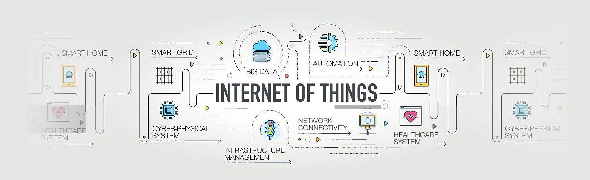

Latent Orthonormal Contrastive Learning in Disaster Damage Assessment Using Paired Remote Sensing Imagery
Fei Dou, Cameron Cianci, Jinbo Bi
In Submission to ICCV 2023
A latent orthonormal contrastive learning approach is proposed to handle the high-resolution satellite/aerial imagery.

About
I am currently a final-year Ph.D. student in Computer Science and Engineering at the University of Connecticut (UCONN) in Laboratory of Machine Learning & Health Informatics, working on Machine Learning (ML) / Artificial Intelligence (AI) in the Internet of Things (IoT) supervised by Prof. Jinbo Bi. Before that, I was working on Underwater Acoustic Sensor Networks (UWSAN) in Tianjin University supervised by Prof. Zhigang Jin. I received M.S. degree and B.S. degree in Electrical Engineering.
My research focuses on exploring how AI/ML can improve the Efficiency, Security, and Scalability of the IoT. My research interests include: Reinforcement Learning, Federated Learning, On-Device Learning, Computer Vision, Contrastive Learning, Representation Learning; Location-based Services (LBS), Edge Computing, Data Privacy, Remote Sensing Imagery, Smart City, Mobile Computing, Wireless Networks.
News
[2023/01] Our paper submitted to IOT-J in now Under Revision!
[2023/01] Our papers (two) are Under Review by IJCAI 2023.
[2022/11] I am invited to give a talk on "Special Topic on Reinforcement Learning and its Applications" at University of Michigan-Dearborn.
[2022/10] Our paper is Under Review by IEEE Internet of Things Journal (IOT-J).
[2022/08] Our paper is Under Review by IEEE Internet of Things Journal (IOT-J).
Selected Projects
Remote Sensing, Satellite/Aerial Imagery, Contrastive Learning, Computer Vision
Bi-Subspace Saliency Detection
Jin Lu, Fei Dou, Chun-Hsi Huang
CCWC 2017 [paper]
A novel bi-subspace data-driven saliency detection model is proposed by consider the problem from subspace analysis
to characterize the background and foreground.
Location-based Services (LBS), Reinforcement Learning, Federated Learning
On-device Indoor Positioning: A Federated Reinforcement Learning Approach with Heterogeneous Devices
Fei Dou, Jin Lu, Tan Zhu, Jinbo Bi
Under Revison by IEEE Internet of Things Journal (IOT-J)
A personalized federated learning (FL) for reinforcement learning (RL) is proposed to automatically learn
environmental dynamics by client-environment interactions via RL and cope with the diversity of client devices
and their non-identical data distributions via personalized FL.
A Bisection Reinforcement Learning Approach to 3-D Indoor Localization
Fei Dou, Jin Lu, Tingyang Xu, Chun-Hsi Huang, and Jinbo Bi
IOT-J 2021 [paper]
A bisection reinforcement learning method is proposed to bisect the search space in a hierarchy from the entire
building down to a prespecified distance scale to the object position, by formulating the indoor localization
problem as a Markov decision process rather than a typical classification or regression problem.
Top-Down Indoor Localization with Wi-Fi Fingerprints using Deep Q-Network
Fei Dou, Jin Lu, Zigeng Wang, Xia Xiao, Jinbo Bi, Chun-Hsi Huang
MASS 2018 [paper]
A top-down searching method using a deep Q-network agent is proposed to tackle environment dynamics in
indoor positioning with Wi-Fi fingerprints. Our model learns an action policy that is capable to localize
75% of the targets in an area of 25000m² within 0.55m.
A Smart Narrow Down Approach based on Machine Learning for Indoor localization
Sahibzada Umair, Fei Dou, Tughrul Arslan
Under Review by IEEE Internet of Things Journal (IOT-J)
[paper][code/data]
Underwater Acoustic Sensor Networks (UWASN), Medium Access Control (MAC)
On-demand Pipelined MAC for Multi-hop Underwater Wireless Sensor Networks
Fei Dou, Zheng Peng
WuWNet 2015
[paper][code/data][video]
The Multi-channel MAC Protocol for High Performance Underwater Sensor Networks
Fei Dou, Zhigang Jin, Yao Zhang, Yishan Su
Journal of Harbin Engineering University 2015, CWSN 2013
[paper]
Motion Prediction Based MAC for Underwater Wireless Sensor Networks
Yishan Su, Zhigang Jin, Zixin Liu, Fei Dou*
Journal of Electronics & Information Technology 2013
[paper]

WSF-MAC: A Weight-based Spatially Fair MAC Protocol for Underwater Sensor Networks
Fei Dou, Zhigang Jin, Yishan Su, Jian Liu
CECNet 2012
[paper]
Crop Yield Prediction, Intelligent Agriculture
Recommender System, Click-Through Rate, Interaction Effects
Identifying Interactions among Categorical Predictors with Monte-Carlo Tree Search
Tan Zhu, Fei Dou, Chloe Becquey, Jinbo Bi
In Preparation,
[paper]
Wireless Rechargeable Sensor Network (WRSN), Mobile Charger, Path Planning
Publications
Publications & Patents
- Fei Dou, Jin Lu, Tingyang Xu, Chun-Hsi Huang, and Jinbo Bi, “A Bisection Reinforcement Learning Approach to 3-D Indoor Localization.”, IEEE Internet of Things Journal (IOT-J) 8, no. 8 (2021): 6519-6535. (Impact Factor: 10.238)
- Fei Dou, Jin Lu, Zigeng Wang, Xia Xiao, Jinbo Bi, Chun-Hsi Huang, “Top-Down Indoor Localization with Wi-Fi Fingerprints using Deep Q-Network.”, In 2018 IEEE 15th International Conference on Mobile Ad Hoc and Sensor Systems (MASS), pp. 166-174. IEEE, 2018. (Accept Ratio: 28%)
- Jin Lu, Fei Dou, Chun-Hsi Huang, “Bi-Subspace Saliency Detection.”, In 2017 IEEE 7th Annual Computing and Communication Workshop and Conference (CCWC), pp. 1-7. IEEE, 2017.
- Martin, Robert, Yibo Zhu, Lina Pu, Fei Dou, Zheng Peng, Jun-Hong Cui, and Sanguthevar Rajasekaran, “Aqua-Sim Next Generation: A NS-3 based Simulator for Underwater Sensor Networks.” In Proceedings of the 10th International Conference on Underwater Networks & Systems (WuWNet), pp. 1-2. 2015.
- Fei Dou, Zheng Peng, “On-demand Pipelined MAC for Multi-hop Underwater Wireless Sensor Networks.”, In Proceedings of the 10th International Conference on Underwater Networks & Systems (WuWNet), pp. 1-5. 2015.
- Yishan Su, Zhigang Jin, Fei Dou, “The Multi-channel MAC Protocol for High Performance Underwater Sensor Networks.”, Journal of Harbin Engineering University. 36, no. 7 (2015): 987-991.
- Yishan Su, Zhigang Jin, Zixin Liu, Fei Dou*, “Motion Prediction Based MAC for Underwater Wireless Sensor Networks.”, Journal of Electronics & Information Technology. 35, no. 3 (2013): 728-734.
- Fei Dou, Zhigang Jin, Yao Zhang, Yishan Su, “A High Performance Multi-Channel MAC Protocol for Underwater Wireless Sensor Networks.”, In Proceedings of the 7th China Conference on Wireless Sensor Network (CWSN), pp. 1-11, 2013.
- Fei Dou, Zhigang Jin, Yishan Su, Jian Liu, “WSF-MAC: A Weight-based Spatially Fair MAC Protocol for Underwater Sensor Networks.”, In 2012 2nd International Conference on Consumer Electronics, Communications and Networks (CECNet), pp. 3708-3711. IEEE, 2012.
- Jian Liu, Fangmin Li, Fei Dou, et al, “An Adaptive Cross-layer Mechanism of Multi-Channel Multi- Interface Wireless Networks for Real-Time Video Streaming.”, In 2010 7th International Conference on Ubiquitous Intelligence & Computing and 7th International Conference on Autonomic & Trusted Computing, pp. 165-170. IEEE, 2010.
- Zhigang Jin, Zixin Liu, Fei Dou, “Nodes Distribution Method Aiming at Improving the Fairness for Underwater Acoustic 3D Sensor Networks”, Patent, CN103095382B.
- Zhigang Jin, Fei Dou, Yishan Su, “Spatially Fair Media Access Control Method for Underwater Sensor Networks”, Patent, CN102612091B.
Working Papers
- Fei Dou, Jin Lu, Tan Zhu, Jinbo Bi, “On-device Indoor Positioning: A Federated Reinforcement Learning Approach with Heterogeneous Devices.”, (Under Revision by IEEE Internet of Things Journal (IOT-J), Impact Factor: 10.238)
- Sahibzada Umair, Fei Dou, Tughrul Arslan, “A Smart Narrow Down Approach based on Machine Learning for Indoor localization.”, (Under Review by IEEE Internet of Things Journal (IOT-J), Impact Factor: 10.238)
- Ziba Parsons, Fei Dou, Houyi Du, Jin Lu, “RWSADMM: A Server-Free Federated Learning Approach via Random Walk Stochastic ADMM.”, (Under Review by ICML 2023)
- Tan Zhu, Fei Dou, Xinyu Wang, Jinbo Bi, “DDF-Net: A Deep Dense Forest Net to Learn Interaction Effects for Click-through Rate Prediction.”, (Under Review by IJCAI 2023)
- Qinqing Liu, Fei Dou, Jinbo Bi, “Customized Positional Encoding with Side Information: A Robust Representation Learner for Crop Yield Prediction.”, (Under Review by IJCAI 2023)
- Fei Dou, Cameron Cianci, Jinbo Bi, “Latent Orthonormal Contrastive Learning in Disaster Damage Assessment Using Paired Remote Sensing Imagery.”, (In Submission to ICCV 2023)
- Tan Zhu, Fei Dou, Chloe Becquey, Jinbo Bi, “Identifying Interactions among Categorical Predictors with Monte-Carlo Tree Search.”, (In Preparation, Preprint Version Available Online
Teaching
Teaching Assistant and Lab Instructor
- CSE 1010 Introduction to Programming, at University of Connecticut, 4 semesters
- CSE 4300 Operating Systems, at University of Connecticut, 2 semesters
Guest Lectures and Tutorials
- Lectures at University of Michigan-Dearborn CIS 579 Artificial Intelligence: Reinforcement Learning and its Applications, 2022
Mentoring
- Undergraduate Students
- Nicholas Hartunian: graduated with Honors Scholar at UCONN with Honors Thesis “Deep Learning for Fungus Detection from Microscopic Images” under my supervision as an associate advisor.
- Cameron Cianci: undergraduate at UCONN, working on Travelers Project and one paper is in submission to ICCV.
- Junior Ph.D. Students
- Mainak Mondal: Ph.D. student at UCONN, one paper in preparation.
- Sahibzada Umair: Ph.D. student at the University of Edinburgh, one paper under review by IEEE IOT-J.
Selected Invited Talks
- University of Michigan-Dearborn, Invited Talk, ”Special Topic on Reinforcement Learning and its Applications”, Dearborn, Michigan, 2022
- IEEE International Conference on Mobile Ad Hoc and Sensor Systems (MASS), ”Hierarchical Indoor Localization Using Deep Q-Network”, Chengdu, China, 2018
- Seventh China Conference on Wireless Sensor Network (CWSN), ”Multi-Channel MAC Protocol for Underwater Wireless Sensor Networks”, Qingdao, China, 2013
- Qinghai Normal University, Invited Talk, ”Spatial Fairness in MAC Protocol for Underwater Sensor Network”, Xining, China, 2012
- Second International Conference on Consumer Electronic, Communications and Networks, ”A Weight-based Spatially Fair MAC Protocol for Underwater Sensor Network”, Three Gorges, China, 2012
CV & Bio
Download my CV here.
Fei Dou's' research interests lie in analyzing and resolving challenges associated with Machine Intelligence of Ubiquitous Computing in Distributed Systems, including:
- inefficiency and low scalability of trained models, especially when the solution space is large;
- security and privacy concerns of user data;
- data heterogeneity across devices and imbalanced data distribution on individual devices;
- communication bottlenecks and high computational costs in distributed systems.